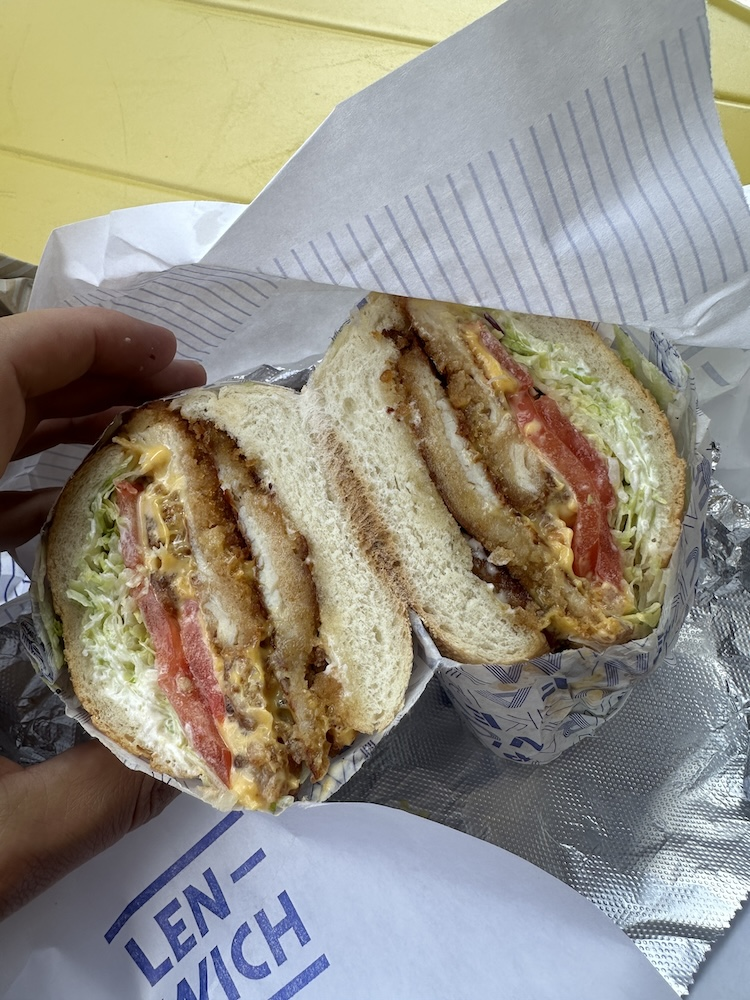
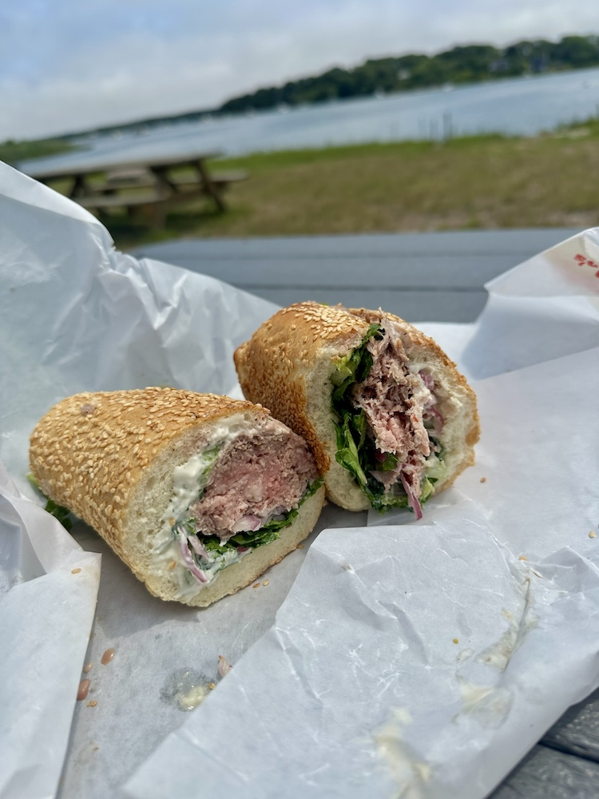
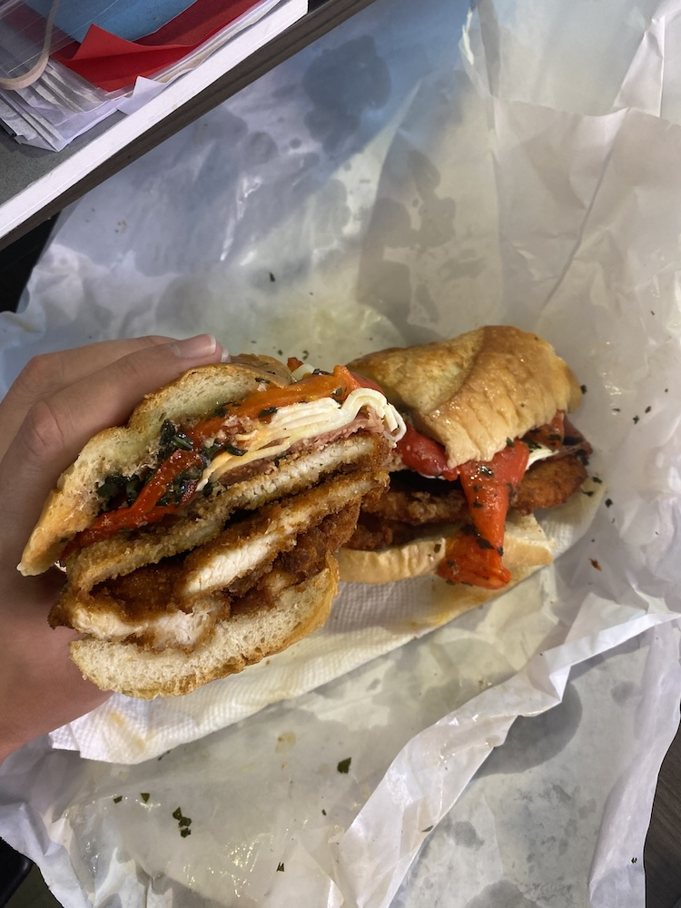
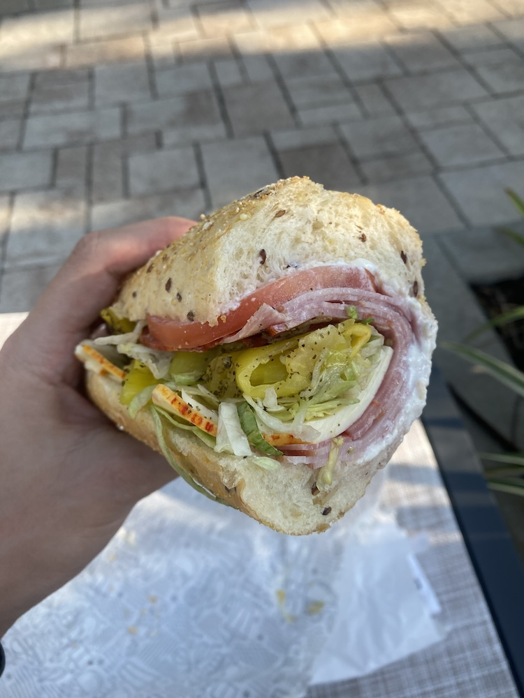

Sandwiches are one of the more perfect foods. Here are some images of sandwiches I have eaten over the course of the last few years.
One of my all-time favorites. Chicken cutlet, american cheese, lettuce, tomato and mayo on a hero from Lenwich in NYC.
A great roast beef sandwich from Mo's Lunch in Oak Bluff's on Martha's Vineyard. House roasted beef, red onion, shredded lettuce and aïoli on a sesame seed hoagie roll.
The Dennis with Roasted Red Peppers from Parisi Bakery in SoHo NYC. Chicken cutlet, proscuitto, roasted red peppers, mozzerella cheese, onion, pesto and mayo.
Another all-timer. The Boar's Head Italian Sub on multigrain bread from Publix. Salami, tavern ham, cappicola, and provalone cheese with lettuce, tomato, banana peppers, oil & vinegar, salt, pepper and mayo.